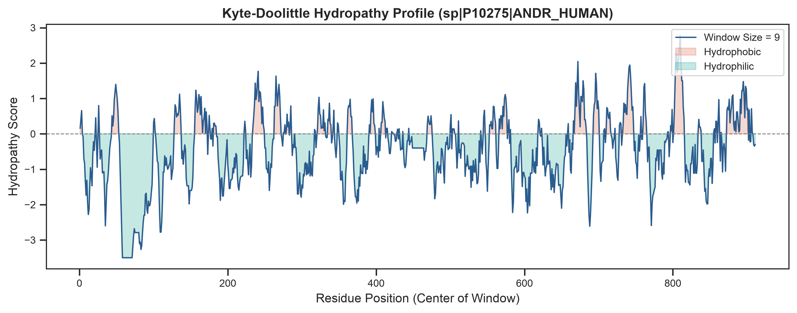
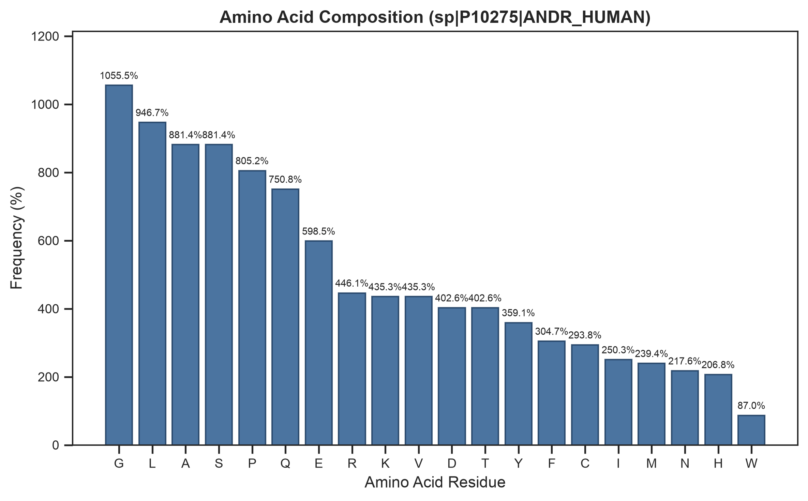

sp|P10275|ANDR_HUMAN Androgen receptor OS=Homo sapiens OX=9606 GN=AR PE=1 SV=2
Protein identifier sp|P10275|ANDR_HUMAN: sp|P10275|ANDR_HUMAN Androgen receptor OS=Homo sapiens OX=9606 GN=AR PE=1 SV=2. The sequence possesses a computed molecular weight of 98987.56 Da and a theoretical isoelectric point of 6.01. The GRAVY index of -0.432 characterizes the overall hydropathic nature.

Relative frequency distribution of standard amino acid residues.

A total of 0 homologous sequences met all identity and E-value significance cutoffs.